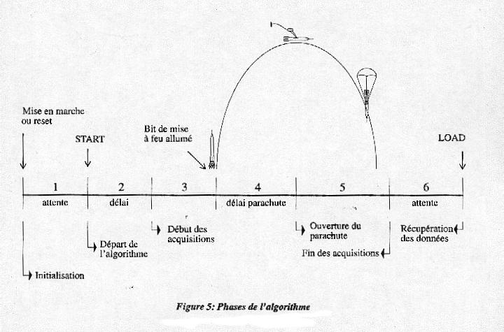
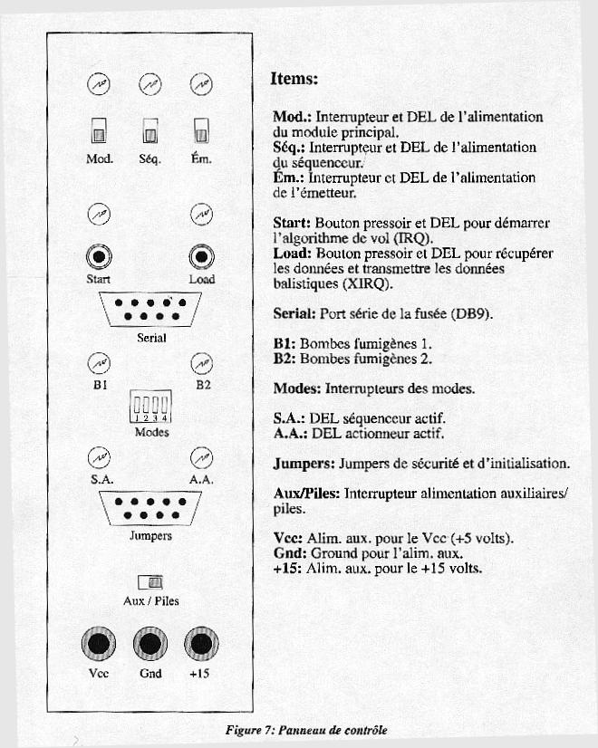

Conception : Marc-André
Hébert
Dernière mise à jour : 21 février, 2000
|
Histoire et Résultats Le Festival de l'Espace, auquel l'équipe du Gaul a participé, se tenait à Bourges en France. Cet évènement a eu lieu du 22 au 28 août 1994. Durant cette semaine, plusieurs activités organisées pour le public et les participants ont eu lieu. Cela se tenait en majeure partie au Palais des Congrès à Bourges. Les gaulois y avait un kiosque pour présenter le projet Orion au public. C'est à ce même endroit qu'était effectué les dernière confections ainsi que toute la batterie de tests. Durant toute la semaine, l'équipe du Gaul a effectué les contrôle et les correctifs qui s'imposaient et ce, jour et nuit. Après avoir réussi à qualifier la fusée pour le lancement aux petites heure du matin la veille de celui-ci, ils se sont présentés à l'aire de lancement en ce dimanche 28 août 1994. Le lenacement était prévu pour 17h09. À partir des trente dernière minutes du compte à rebours, les gaulois sont autorisés à descendre à la rampe de lancement pour effectuer les derniers préparatifs avant le décollage. À H-28 minutes, ils se préparaient pour le premier essai de télémesure. À H-25 minutes; on annonce qu'il y a un problème. Le signal envoyé par l'ordinateur de vol est absent à la réception au sol. Après quelques vérifications, on se rend compte que celui-ci est tombé en panne. L'équipe demande un arrêt du compte à rebours, mais on refuse, car il y a plusieurs autres lancements après. On donne le choix, ou bien ils prennent une chance de lancer tout de même et qu'ils sefient au système de sécurité pour ouvrir le parachute, ou bien ils annulent le compte à rebours et ils se retruvent à être les derniers à lancer, avec une possibilié de manquer de temps et de retourner au Québec sans avoir pu lancer la fusée. Après avoir obtenu un temps d'arrêt de deux minutes, l'équipe a décidé ensemble de prendre le risque et de procéder tout de même au lancement et de déterminer les derniers préparatifs. Après quelques secondes, l'équipe du Gaul a perdu de vue la fusée! Malgré ce court laps de temps, ils ont pu constater qu'Orion jouissait d'une stabilité de vol remarquable. Les secondes qui ont suivi furent les plus angoissantes... À H+33 secondes, on annonce l'arrêt de la télémétrie. Cela veut dire que notre fusée a touché le sol. Cela veut aussi dire que le parachute ne s'est pas ouvert à cause du temps de vol relativement court. Comble de malheur, le PC de localisation visuelle, le radar ainsi que la caméra à infrarouge ont tous perdu la fusée de vue. C'est pourquoi qu'à nous n'avons toujours pas retrouvé Orion.

 Conclusion Cependant, l'équipe du Gaul ne qualifie pas cette expérience d'un échec total. Car, Orion du succès elle en a eu. Orion était le premier projet du genre du Gaul et aucun des membres n'avait pu mettre à terme un projet d'une telle envergure. De plus, seulement le fait d'avoir réussi à passer tous les contrôle pour pouvoir lancer la fusée, constitue un exploit en soi.
Membres du GAUL lors du projet Orion
Directeur de projet: Frédéric Gagnon *
* Membres ayant fait le voyage en France
|
|
Conception : Marc-André
Hébert |